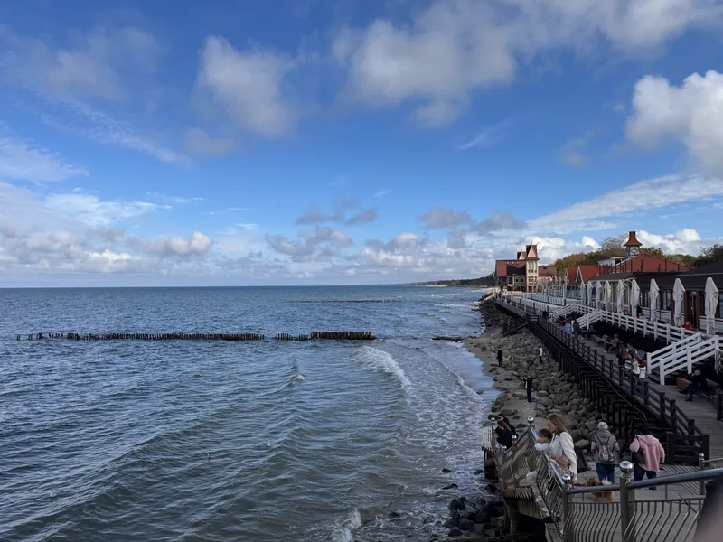
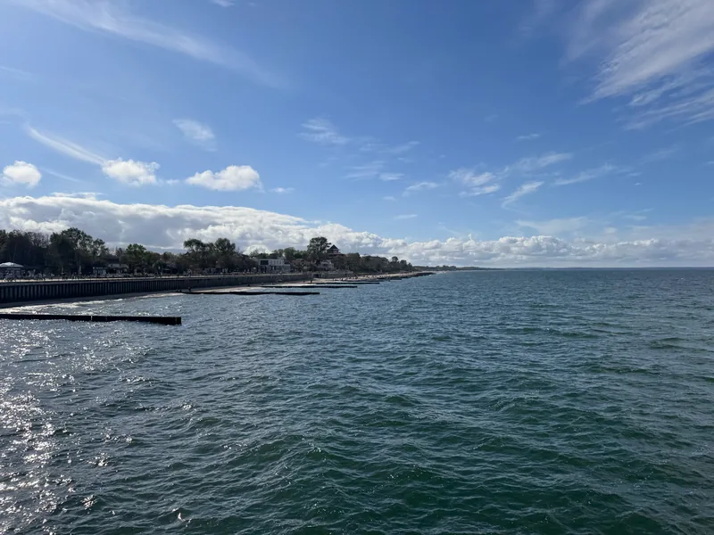

Больше, чем выходные
Балтика без спешки
Виллы, сосны и два приморских города. Один день — одно настроение.

Выберите поездку
8 готовых плановПятничный побег
Вечер у моря, день на дюнах и Амалиенау перед возвращением.
 3 дня
3 дняБалтика без спешки
Виллы, сосны и два приморских города. Один день — одно настроение.
 3 дня
3 дняДве косы
Куршская и Балтийская: два разных берега с возвращением каждый день.
 3 дня
3 дняШтормовая Балтика
Музеи и городские прогулки, которые можно сократить по погоде.
3 дняЗападный берег
Янтарный и Балтийск — и материалы о будущем курорте под Поваровкой.

2 дняПитерский уикенд
Два дня: Зеленоградск и дюны. Сначала море, затем прогулка по косе.
4 дняПрисмотреться к жизни у моря
Четыре дня на город и побережье, сравнение Cosmos Stay и Белой Дюны.
Рабочая поездка
Город, побережье и подготовка встречи: компании, закупки и рабочий слой.
Ваши 3 дня
Город, море и время для себя- 1
- 2
День 2Светлогорск
- 3
По пути
Дорога из Храброво и база
Из аэропорта сначала доберитесь до выбранного города. Адрес жилья, время трансфера и бронь добавьте в «Моём дне»: они войдут в личный PDF.
Транспорт и переезды →Где остановиться →Связь и офлайн на косах
Перед прогулкой сохраните PDF на телефон и проверьте выбранную сеть в настройках мобильной связи.
Подготовить телефон →Дождь и ветер
Для короткого дня выберите «Штормовую Балтику»: музеи и короткие прогулки вместо длинного променада.
Музеи и город →Недвижимость и рабочая поездка
Цель поездки меняет план. Материалы о проектах и компаниях помогут подготовить вопросы для встречи.
Проекты и сравнение →Работа и этапы найма →